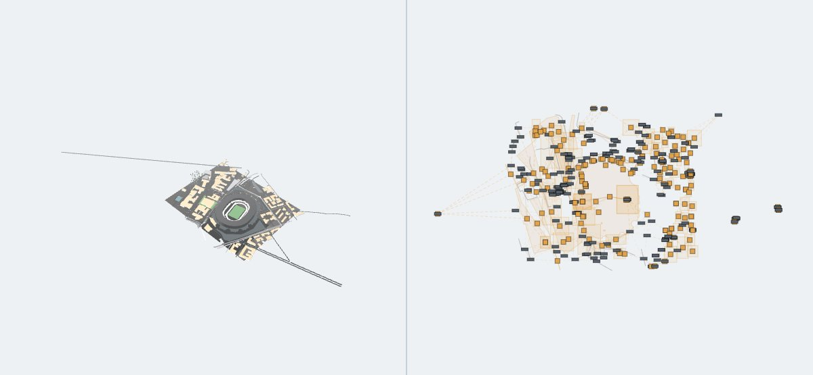

Urban digital twins · Research demo
TraceMat
Traceable Material-Aware Urban Knowledge
for Network Intelligence
From a surface to its material, its geographic identity, and the evidence behind the connection.
Explore the urban scene
Open full viewer ↗
Rotate the scene. Select a surface. Follow its connection to the graph.Maradona scene · Reduced-resolution textures · No installation
What connects a city to its materials?
TraceMat links addressable 3D surfaces to geographic entities and keeps the evidence for each assignment. Material classes connect to separate radio and LiDAR property layers. Select a surface to inspect that connection; open the full viewer to explore queries and physical layers.
3D surfaceGrounded graphMaterial properties